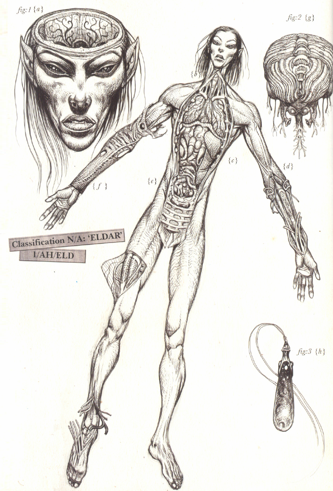
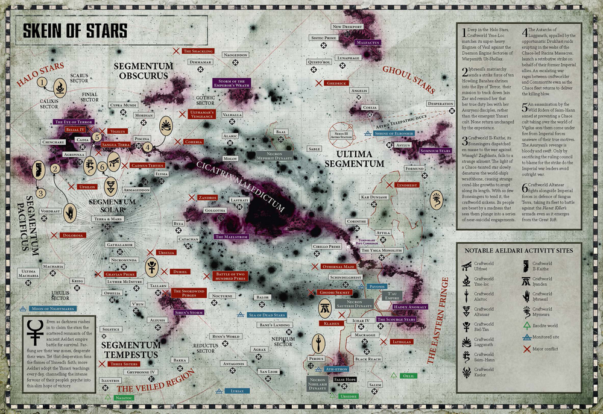

<<<<<ÆLDARI>>>>>
These creatures known commonly as the Eldar view themselves as the true heirs of galactic dominion. Ancient texts, both human and xenos, indicate that this may have been true as recently as 15,000 years ago. The cause of their precipitous decline is a mystery with many conflicting accounts, agreeing only that it was the Eldar themselves that caused their fall. Superficially, they are similar to humans in most regards. Their reflexes and lifespans dwarf all but the Emperor’s Angels. They also have an uncanny attunement to the powers of the witch. Unaugmented, their bodies are below that of a baseline human in terms of resilience and strength.
